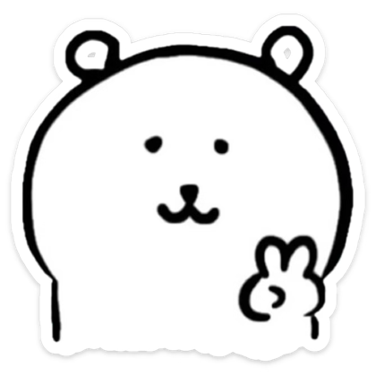

✉️📮🐱🍰
📮 Mailbox Archive
Mail #1 - Friendly reminder to Z
Our first email woo hooo
From: L → To: Z
Dear Z,
I hope this email finds you well (at least we aint ending up 5 feet below on that Sat).
This serves as a polite reminder concerning the code you gave me. It is important that we do not overlook this matter as it can leads to me biting you (´ω`).
Your attention to this would be highly appreciated. Please ensure that you give me a complete answer.
Should you have any questions (pls no) or require any clarification, please do not hesitate to ask me on a walkie.
Thank you for your time mít tơ Z.
Sincerely,
[KL]
Mail #2 - Boop bi boop.. (´･ω･`)
look like L miss Z in the holiday, while Z busy with family's work.
From: L → To: Z
Haloo Z,
Guess you're having the best time of the holiday without me huhxD jk .So I wanted to drop you a line because "something" has been my mind, and I kinda want to express how much I appriciate your "lovely" apology letter.
It's hard to define exactly what this is, but whatever it is, it's pretty great wut is going on rn (*´ω｀*). Beside your positivity n sense of humor with yo silly 5 yrs old intelligence, your brain cells is also a major hightlight that attract me:)). There's a real connection ig, and I find myself looking forward to our walkie on the following day or in this hot a$$ summer.
Knowing we're both taking things at our own pace, and I respect that. But wanted to let you know that you bring a unique kind of "funny annoyance" to my life. It's weird and intriguing all at once (never notice this b4).
Just wanted to share that with you. Hope this message finds you well and btw I would accept the letter if one of your parent sign it for me>;)))
Talk to you soon bbi gal Z.
Yo goofy "professor",
[Nguyen Khanh Linh]
Mail #3 - First email from Z
Hehe Z need to rep.
From: L → To: Z
Dear “teacher” L,
Well, i think it is a good idea to write an email to L after a bunch of events in which L opening her feeling.
It’s quite funny (and also surprise) to see how our relationship start, going through bunch of black out and still haven’t forgot (or blocking xD) each others. To be honest, i’m quite wondering how tf i did even invite L for a coffee 🤣.
To be honest, when off, i could find a bunch of reason to put L into the low priority and forget her forever (or trick her to forgot me so), but during times where my logical brain shut off, somewhere in my brain is still lingering, still waiting and missing, even just a tiny bit 😮💨. (Over thinking i guess).
That said, i think you might notice too, every words, every action is done in the fight of my thought, of logical and emotional, of the scare and of the idealism. This things also happened to multiple aspects of my life, especially after joining the Peculiar, ig i’m still quite young and low on experience to doing things that, really news and it happens so fast at a tiny amount of time 🤩.
Remember the times that i ask u for a wakie that talk about the past, now and future? Simply what i want that time to explore and hear more about you, and also to talking more about me, the things that follow the tradition of my and my good old friends. Cause i realized after a crazy amount of walkie and i still have no idea about L. To try and break the hesitation and the unnecessary consideration of every actions. On the other hand, it also serve as a opportunity for me to review myself, especially after quite a headache time.
Anyway, it take times, but in a way that i still think match the answer your choose, the “long-term” answer. However, you have actively changing and shaping the original answer, and it got no f% idea how this will be going, hate u (and “love” u at the same time…. (Nah just copy from the daylight 🤣)
Okay, bai bai, have a nice day, and have a nice day 🥰.
Sign by Z, from the toilet, the sofa, the car, highway, supermarket and my mind 🤣.
P/S: welcome to the Z 2025 writing style, raw, no edit, no review, and so fuking hard to understand. Thanks to HM. And you may notice too, full of problems but no solutions 😭. But don’t worry, this email only have hesitation, no strategy move or hidden word meaning that i used to 🤣.
From: Z → To: Z
Sorry i was low on time so i even don’t read it again, just top up and top up, also i don’t want to refine=)) low on idea to describe.
From: L → To: Z
I guess after all, the only one thing I wanted to know is that. Are you "open" for me step in your private life?

From: Z → To: L
I thought u already step in 🤣
😆 1
From: L → To: Z
Dear Z,
After a long consideration, I have come to point of thinking the most important question of all time.. Wonder if Z's seeing someone else right now? If not, would you mind seeing me?:)
In a better way, who am I to you sir?
From: 🪿
Mail #4 - 🪿
Cannot be expected =))
From: L → To: Z
Heyooo I know this is unexpected,
So, here's the thing that popped into my head out of nowhere... I've kinda been thinking lately that it would be necessary to be "clear". Like, beyond just hanging out and stuff. Are you serious about this? Or just messin around lmaoo.
[If ukuk (*´-`)]
And honestly, when I think about people I enjoy being around, you're definitely up there. No pushy alright =))) happy answering pls be serious on this onee.
P/s: have a nice day
L.
From: Z → To: L
Heyooo it DOES really unexpected 😅.
Well I just accidentally put you into low priority this morning so 😆 nah i’m just kidding.
But to be honest, it is so fun to be like this =)), no constraint, no hard feeling (please don't think it the other way). Also, this is the option that you choose from that day, the second =)), in which I would try to foster a long-term relationship which might look like this 🤣.
Haha alright let me make it clear, the reason that i don't give any word is because somehow i believe that would make a relationship more sustainable.
I intend to reveal this like, maybe at the end of next year (if we still haven't blocked each other) but ah mah gah, L pressing me real hard, and i think it is a good idea to reveal it, like 50% =))).
Anyway, i think you can feel it =)), i would kick your ass (or L?) if i really considered you sideways.., so don't overthink gal, believe me sometimes the non-clear is more fun than clear it 🤣.
ALSO, please stop questioning me and my đát đì alliance 😭😭, phan cam lam.
In the meantime, it is worth mentioning that you are literally kinda changing the original answer of mine, that day. =)).
P/S: (ah mah gah Z is even more worry about L kick his ass, as a protect mechanism of the Z brain usually find reason to forget about L while waiting her to rep 🤣🤣)
P/S #2: literally i reference my first Z to L and really wonder how tf i can write that so good 😭.
~Z~ (in case my auto sign doesn't work).
Mail #5 - To Z part ?
Again =))
From: L → To: Z
Thư lần này ở dạng tiếng việt nhé:)) hoặc nửa tây nửa ta.
Chẳng có gì lắm, chỉ nhắn gửi là thấy vui khi đi ưalkie với Z nên mới cười như hít bóng thôi:))) (bớt chê lại đê) coi là thư cảm ơn vì dành thời gian cho tôi;)).
È hèm boss L thì khá ngại chia sẻ, nhưng tôi thấy trân trọng cái ông Z tẻn tẻn này phết nên ờm you got vé free into deeptalk w L còn ten. Chắc chắn không phải do đây là lần đầu L viết letters cho ai đấy và thực sự có hồi âmxD đâu nhề.. (Ngại and cảm cave vê lờ)
Thì biết câu chuyện boss L có quá khứ khá xàm xí có khi chằng chịt khuyết điểm (mix thêm quả ngành nghề với tính cách "hơi" khô khan) ấy mà cũng hơi tự ti để chấp nhận là có "ai đấy" đang really quan tâm đến bản thân L sau vài lần L bị đá=)), well ofc I'm not perfect nhưng một phần nào đấy I would still wanna give out the best thing to you. (Sến oẹ oẹ) mình cũng muốn hiểu thêm về bạn "đối tác" này mà nhẻ;)
Thôi thìi, đến nước này cũng phải nói là cũng "dính" đấy. Một vài phần cũng vẫn hơi khúm núm vì là Z giống đồng nghiệp của tôi nữa:)) chưa kể Z cũng là bạn của T hà hà.. Tôi hơi bị thích Nguyên đấy, bị cáo có thích chủ phiên toà không?xD
(P/s: you mà lm me buồn => tôi chặt 3 chân ông soon)
-L-
From: Z → To: L
Chào buổi sáng sếp L,
E đang tự nhủ bảo mail mình dạo này khá bình yên =)) nhất là sau khi đã clear được kha khá các question của sếp L xong tự nhiên 🤣.
Anyway, switch back to another tone. Bằng một cách thần kỳ, lúc bà L soạn và gửi thư này thì hình như cũng đúng là lúc tôi đang vật lộn trong thế giới mà brain của tôi nghĩ ra (hơi nightmare một xíu), mà by somehow liên quan đên bà L 🤣.
Nhìn chung là tôi rất appreciate lá thư hết sức "cute" và "hack não" này của sếp L =)). À mà cảm ơn L vì tấm vé nhé =)), Z hi vọng nó không có hạn sử dụng và số lần 🤣.
-Z- (yeah my autosign work but it put the sign too far)
P/S: haiz chỉnh setting mail xong tôi quên phéng mất là định viết gì vô đây. A nhớ rồi, chatGPT đợt này phân tích và trả lời thơ ghê phít =))
😆 1
From: L → To: Z
Thấy trả lời mail xong quay ra quay vào chưa vào nổi vấn đề chính kìa môm.
Mấu chốt là trả lời câu cuối nữa em eii(ﾟωﾟ)
Có gì mong mỏi ông này rep mes để kể lại cái nightmare đi, thấy tò mò phếtxD (thư dễ hiểu thế kêu "hack não" đúng Z dẩm)
À thì đương nhiên vé không có giới hạn ròi hà hà;))
Mail lần này như là sếp L tự thú nhé..
Mail #6 - Píp po píp po
L react to mom Z deep talk, new year celeb.
From: L → To: Z
Hú la nốt cái này trước khi ẹo=))) sr sr nhé br
Nhưng mà thấy măm Z nói cũng có đúng đó nha, cái gì cũng có hai mặt thiệt cơ mà yêu thương hết mình phải có cả tỉnh apple nửa;)). Tớ thấy hạnh phúc khi thấy được Z trưởng thành hơn từng ngày, sẽ rất buồn nếu cậu thương tớ mà để bản thân phờ phạc nha (thấy có lỗi ý) nên chăm sóc bản thân kĩ vàooo>:(((
Tớ biết Nguyên chiều tớ và tớ cũng hiểu cho Nguyên, nên là cứ thoải mái dời lịch của tớ nếu cậu thật sự bận nhé (cứ nói ra nếu cậu mệt nha + đừng cố, mình còn thời gian mò hì hì).
Điều tớ muốn cậu biết chỉ là ngoài gia đình thì tôi support cậu hết mình dù có ra sao (ngoài vụ ăn uống chểnh mảng nhá, măm với đát Z mà kêu Z gầy phờ phạc là tôi tự cắt meals của mình đấy>:((((). Hè hè effort của tớ nhỏ, mong Z có thể thành công dù có mặt tớ ở đó hay hông nhé>< hí hí💕
P/s: trải nghiệm của parents nhiều khi giúp mình nhận ra bức tranh toàn cảnh hơn nè, tiếp nhận thông tin từ mẹ giúp nhìu đó, tớ ngưỡng mộ người mẹ của Z lắm á bác ở bên cậu lúc cậu cần mà. Hề hề sến vãi, thế nhé đừng nghĩ nhiều mà CHĂM SÓC BẢN THÂN KĨ VÀOO!!
Nói ngại quá nhưng đừng ngại nhận quà tớ nhé >< tớ sẽ cố hết sức để cho cậu những kỉ niệm đẹp nhất (đừng quên học hành nhé, hãy để tớ là người đi bên cạnh thôiii đừng quá mê nhé không mẹ mắng đấy🤣)
-Xếp L rất chân thành cảm ơn và thương you-
From: Z → To: L
Má nó chứ sao tự nhiên nó bị ẩn làm tớ hết cả hồn.
Năm học mới vui vẻ nhé: https://ztol.notion.site/Z-to-L-new-school-year-24488ef3d98780f8851af274d1965726
IELTS 8.0 thẳng tiến hú hú.
Trần Phúc Nguyên
💖 1
Mail #7 - Respond to "Z to L" extremely cuti letter:))
L react to Z celeb letter.
From: L → To: Z
Hà Nội, ngày 4 tháng 8 năm 2025
Gửi đến người bạn nhỏ đáng yêu của tớ,
First thing 1st, dành lời cảm ơn siêu cấp sâu sắc đến cho thời gian mà bạn Z đã giành ra để viết cho tớ những lời hay ý đẹp nhất như vậy hì hì. Tớ thật sự rất trân quý điều đó, không giấu gì cậu chứ những lần bản thân tôi được nhận mấy món quà từ Z cảm giác vẫn bồi hồi như lúc đầu:)). Nói sao nhỉ, sau hơn nửa tháng nữa Nguyên mới đi học nhưng dù sao cứ chúc trước nhá hí. Chúc bạn Nguyên dẩm cụa tớ có một năm 12 vô cùng rực rỡ, thành công trên chính con đường mà cậu chọn nheee! :))đừng quên tớ khi cậu với tới những ước mơ mà cậu hằng mong muốn. Hãy cứ tự tin đồ đáng iu nha như cái cách cậu động viên tớ vậy đó <3, à quên nhỉ như cái trích dẫn tôi yêu thích trong "better days" đó là "cậu hay cứ bước và bảo vệ thế giới của mình, tớ sẽ đi sau và bảo vệ cậu" (eo sến vê lờ nhưng mà cảm cave quá biết làm sao giờ).
Abstract từ bên tớ cả mùa hè đáng nhớ vừa rồi gói gọn trong hai từ ngắn gọn thôi là "euphoria" và "pluviophile". Cảm giác cảm nắng một người trong quả thời tiết cháy đuýt như Hà Nội mỗi mùa hè về nó rất khó tả, tiếng ve hòa mình cùng âm thanh của gió, của nắng khi ngồi đằng sau cậu, còn cả mùi hương nhẹ từ áo cậu nữa. Chắc chắn cảm xúc đấy sẽ sống trong tớ mãi mãi, một mùa hè mà tớ không ngại yêu hết mình cậu nhỉ hí hí. Dù tận đáy lòng tớ luôn sợ việc này sẽ ảnh hưởng đến "con đường công danh" của cậu nhưng thứ lỗi cho tớ nhé, tớ hứa sẽ hỗ trợ cậu hết sức:>>. Những cơn mưa tháng 7 trút qua nhanh như tuổi trẻ của tớ dưới mái trường, nếu cuộc đời có cho tớ lựa chọn để quay lại dầm mưa với cậu, cùng cậu đi qua những tháng năm "lội mưa" đến ướt sũng áo:))) thì chắc chắn tớ cũng không hề hối hận (quay lại bao nhiêu lần cũng được miễn sao vẫn là cậu ở đó, mà cảm xúc vẫn vẹn nguyên). À quên bí mật nho nhỏ, tớ chưa bao giờ thực sự trách Z về mấy cái dẩm đâu, tại tớ hiểu cho cảm xúc mỗi người là khác nhau và chỉ mong cậu nhận ra là dù chuyện có ra thế nào thì tôi vẫn bên cậu cho đến khi Z ở trạng thái ổn nhất ha. Tớ chắc chắn sẽ tự tin nếu có bạn nhỏ Nguyên lẽo đẽo ở bên cạnh, dõi theo từng bước chân của tớ, à thì tớ chưa bao giờ thừa nhận chuyện muốn được bên Z lâu nhất có thể nhỉ>< thì... tớ cũng ngại, nhưng rằng là... liệu cậu sẽ bước tiếp (có thể hơn 9 năm) với tớ nhé? hì hì.
Cuối thư, gửi những lời tốt đẹp, mỹ miều, những vì sao sáng tới đến cho người mà tớ yêu quý và trân trọng này nhé<3 Tớ sẽ luôn tự hào về cậu trên con đường cậu đi, dưới cương vị đối tác chiến lược toàn diện type G siu cấp vip prooo. Tớ mong rằng trong những năm tương lai gần tới của tớ sẽ có tên bạn Trần Phúc Nguyên và ngược lại đối với cậu cũng vậy hẹ hẹ.
Chào thân ái tới người bạn đồng hành (tubi con ti nu của tớ),
Phanh xick lô Z veri smort
beii beii
_Nờ Ka Lờ_
💖 1
Mail #8 - 🗣️ SIÊU CẤP ALARM
Z misunderstood L bơ
From: L → To: Z
Helooo,
Thư nhấn mạnh việc tôi không hề bơ Z từ lúc 2h nhé mà do tôi ngủ quênn😭😭
Biết là Z overthinkin mà tôi làm vậy là sai nên thứ lỗi cho tớ nhé:(( không có ý làm Z buồn hay "tụt" tier. Mong cậu thứ lỗi cho tớ nha, không có chuyện tôi bỏ bê hay bơ vê ka đâu nhé nhớ cho tớ nha😭 quý lắm còn không hết lại còn đòi bơ hừm. Có gì ăn ún điều độ đừng suy nghĩ quá nhè để tập trung thì nèee rồi mình gặp nhau haxD
Xa nhau tí để làm quen nhỡ đâu sau lại múi giờ khác nhau ahihi=))) thí nhá đừng nghĩ ngợi nungg tungg tớ iu cậu nên chỉ cần nhớ thế thoyyy
P/s: tội nhỗi quá 😢, vui lên nhe "motivation" của tôiii
Cê ka 100% ga rừn tee không bỏ bê cục vàng
NKL
😂 1
From: Z → To: L
Trời má cả mail luôn 😆
💖 1